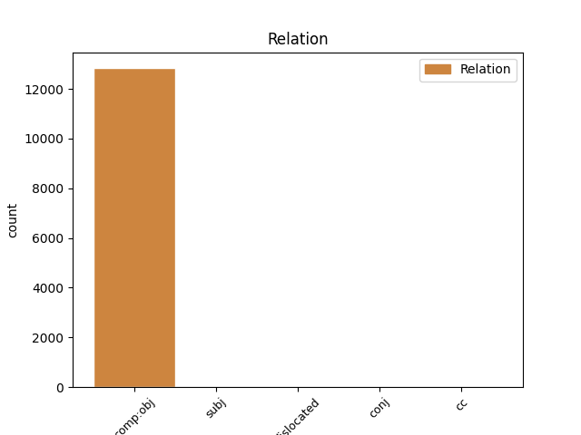
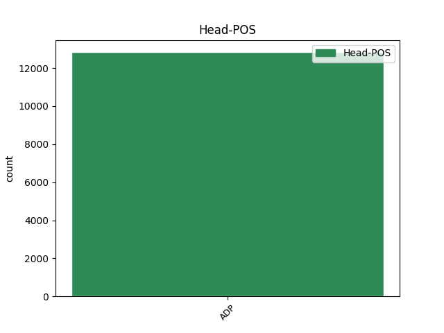
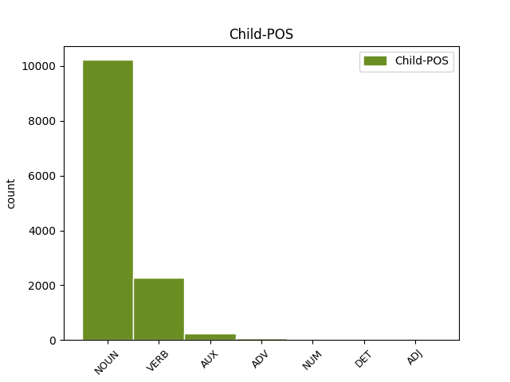

Distribution of features within this leaf



Agreement Rules sorted by frequency.
- When the dependent token is the direct object complements(comp:obj) of the head token, and the head token is ADP and the dependent token is NOUN.
1 उन्होंने _ _ _ _ 0 _ _ _
2 कहा _ _ _ _ 0 _ _ _
3 कि _ _ _ _ 0 _ _ _
4 चीन _ _ _ _ 0 _ _ _
5 तिब्बत _ _ _ _ 0 _ _ _
6 को _ _ _ _ 0 _ _ _
7 व्यापक _ _ _ _ 0 _ _ _
8 स्वायत्तता _ _ _ _ 0 _ _ _
9 देकर _ _ _ _ 0 _ _ _
10 इस _ _ _ _ 0 _ _ _
11 समस्या समस्या NOUN NN Case=Acc|Gender=Fem|Number=Sing|Person=3 12 comp:obj _ ChunkId=NP5|ChunkType=head|Tam=0|Translit=samasyā|Vib=0_का
12 के का ADP PSP AdpType=Post|Case=Acc|Gender=Masc|Number=Sing 0 _ _ _
13 समाधान _ _ _ _ 0 _ _ _
14 का _ _ _ _ 0 _ _ _
15 रास्ता _ _ _ _ 0 _ _ _
16 साफ _ _ _ _ 0 _ _ _
17 कर _ _ _ _ 0 _ _ _
18 सकता _ _ _ _ 0 _ _ _
19 है _ _ _ _ 0 _ _ _
20 । _ _ _ _ 0 _ _ _
1 दलाई _ _ _ _ 0 _ _ _
2 लामा _ _ _ _ 0 _ _ _
3 ने _ _ _ _ 0 _ _ _
4 कहा _ _ _ _ 0 _ _ _
5 कि _ _ _ _ 0 _ _ _
6 मैं _ _ _ _ 0 _ _ _
7 तिब्बती _ _ _ _ 0 _ _ _
8 समस्या _ _ _ _ 0 _ _ _
9 का _ _ _ _ 0 _ _ _
10 सार्थक _ _ _ _ 0 _ _ _
11 और _ _ _ _ 0 _ _ _
12 मान्य _ _ _ _ 0 _ _ _
13 हल _ _ _ _ 0 _ _ _
14 ढूंढ़ने ढूंढ़ VERB VM Case=Acc|Number=Sing|VerbForm=Inf 15 comp:obj _ ChunkId=VGNN|ChunkType=head|Tam=nA|Translit=ḍhūṁṛhane|Vib=ना_का
15 की का ADP PSP AdpType=Post|Case=Acc|Gender=Fem|Number=Sing 0 _ _ _
16 कोशिश _ _ _ _ 0 _ _ _
17 में _ _ _ _ 0 _ _ _
18 हूं _ _ _ _ 0 _ _ _
19 । _ _ _ _ 0 _ _ _
1 मैं _ _ _ _ 0 _ _ _
2 चीनी _ _ _ _ 0 _ _ _
3 संविधान _ _ _ _ 0 _ _ _
4 के _ _ _ _ 0 _ _ _
5 तहत _ _ _ _ 0 _ _ _
6 ही _ _ _ _ 0 _ _ _
7 तिब्बती _ _ _ _ 0 _ _ _
8 समस्या _ _ _ _ 0 _ _ _
9 का _ _ _ _ 0 _ _ _
10 समाधान _ _ _ _ 0 _ _ _
11 निकाले _ _ _ _ 0 _ _ _
12 जाने जा AUX VAUX Case=Acc|VerbForm=Inf 13 comp:obj _ ChunkId=VGNN|ChunkType=child|Tam=nA|Translit=jāne|Vib=ना
13 के का ADP PSP AdpType=Post|Case=Acc|Gender=Masc|Number=Sing 0 _ _ _
14 पक्ष _ _ _ _ 0 _ _ _
15 में _ _ _ _ 0 _ _ _
16 हूं _ _ _ _ 0 _ _ _
17 । _ _ _ _ 0 _ _ _
1 उन्होंने _ _ _ _ 0 _ _ _
2 कहा _ _ _ _ 0 _ _ _
3 कि _ _ _ _ 0 _ _ _
4 दक्षिण _ _ _ _ 0 _ _ _
5 इराक़ _ _ _ _ 0 _ _ _
6 के _ _ _ _ 0 _ _ _
7 बसरा _ _ _ _ 0 _ _ _
8 क्षेत्र _ _ _ _ 0 _ _ _
9 के _ _ _ _ 0 _ _ _
10 आस _ _ _ _ 0 _ _ _
11 - _ _ _ _ 0 _ _ _
12 पास पास ADV NST AdpType=Post|Case=Acc|Gender=Masc|Number=Sing|Person=3 13 comp:obj _ AltTag=ADV-NOUN|ChunkId=NP4|ChunkType=head|Translit=pāsa|Vib=0_का
13 के का ADP PSP AdpType=Post|Case=Acc|Gender=Masc|Number=Plur 0 _ _ _
14 इलाकों _ _ _ _ 0 _ _ _
15 में _ _ _ _ 0 _ _ _
16 दोनों _ _ _ _ 0 _ _ _
17 देशों _ _ _ _ 0 _ _ _
18 द्वारा _ _ _ _ 0 _ _ _
19 संयुक्त _ _ _ _ 0 _ _ _
20 रूप _ _ _ _ 0 _ _ _
21 से _ _ _ _ 0 _ _ _
22 तेल _ _ _ _ 0 _ _ _
23 भंडार _ _ _ _ 0 _ _ _
24 का _ _ _ _ 0 _ _ _
25 पता _ _ _ _ 0 _ _ _
26 लगाया _ _ _ _ 0 _ _ _
27 जाएगा _ _ _ _ 0 _ _ _
28 । _ _ _ _ 0 _ _ _
1 यहां _ _ _ _ 0 _ _ _
2 ५१८ ५१८ NUM QC Case=Acc|Number=Plur|NumType=Card 3 comp:obj _ ChunkId=NP2|ChunkType=head|Translit=518|Vib=0_के_मुकाबला
3 के के ADP PSP AdpType=Post|Case=Acc|Gender=Masc 0 _ _ _
4 मुकाबले _ _ _ _ 0 _ _ _
5 महज _ _ _ _ 0 _ _ _
6 ४२९ _ _ _ _ 0 _ _ _
7 मिमी _ _ _ _ 0 _ _ _
8 वर्षा _ _ _ _ 0 _ _ _
9 हुई _ _ _ _ 0 _ _ _
10 है _ _ _ _ 0 _ _ _
11 । _ _ _ _ 0 _ _ _
1 उन्होंने _ _ _ _ 0 _ _ _
2 बताया _ _ _ _ 0 _ _ _
3 कि _ _ _ _ 0 _ _ _
4 इसके _ _ _ _ 0 _ _ _
5 अलावा _ _ _ _ 0 _ _ _
6 जनवरी _ _ _ _ 0 _ _ _
7 २००४ _ _ _ _ 0 _ _ _
8 से _ _ _ _ 0 _ _ _
9 मार्च _ _ _ _ 0 _ _ _
10 २००४ _ _ _ _ 0 _ _ _
11 तक _ _ _ _ 0 _ _ _
12 पांच _ _ _ _ 0 _ _ _
13 लाख _ _ _ _ 0 _ _ _
14 या _ _ _ _ 0 _ _ _
15 उससे _ _ _ _ 0 _ _ _
16 अधिक अधिक DET QF Case=Acc|PronType=Ind 17 comp:obj _ AltTag=ADJ-DET|ChunkId=NP7|ChunkType=head|Translit=adhika|Vib=0_का
17 की का ADP PSP AdpType=Post|Case=Acc|Gender=Fem|Number=Sing 0 _ _ _
18 संपत्ति _ _ _ _ 0 _ _ _
19 की _ _ _ _ 0 _ _ _
20 , _ _ _ _ 0 _ _ _
21 जो _ _ _ _ 0 _ _ _
22 रजिस्ट्री _ _ _ _ 0 _ _ _
23 हुई _ _ _ _ 0 _ _ _
24 हैं _ _ _ _ 0 _ _ _
25 उनका _ _ _ _ 0 _ _ _
26 विवरण _ _ _ _ 0 _ _ _
27 आयकर _ _ _ _ 0 _ _ _
28 विभाग _ _ _ _ 0 _ _ _
29 की _ _ _ _ 0 _ _ _
30 स्थानीय _ _ _ _ 0 _ _ _
31 सतर्कता _ _ _ _ 0 _ _ _
32 शाखा _ _ _ _ 0 _ _ _
33 ने _ _ _ _ 0 _ _ _
34 मांगा _ _ _ _ 0 _ _ _
35 था _ _ _ _ 0 _ _ _
36 । _ _ _ _ 0 _ _ _
1 मुजफ्फरनगर _ _ _ _ 0 _ _ _
2 के _ _ _ _ 0 _ _ _
3 उत्तर _ _ _ _ 0 _ _ _
4 प्रदेश _ _ _ _ 0 _ _ _
5 इमाम _ _ _ _ 0 _ _ _
6 संगठन _ _ _ _ 0 _ _ _
7 के _ _ _ _ 0 _ _ _
8 प्रदेश _ _ _ _ 0 _ _ _
9 अध्यक्ष _ _ _ _ 0 _ _ _
10 मुफ्ती _ _ _ _ 0 _ _ _
11 जुल्फिकार _ _ _ _ 0 _ _ _
12 का _ _ _ _ 0 _ _ _
13 कहना _ _ _ _ 0 _ _ _
14 है _ _ _ _ 0 _ _ _
15 कि _ _ _ _ 0 _ _ _
16 अमर _ _ _ _ 0 _ _ _
17 उजाला _ _ _ _ 0 _ _ _
18 बहुत _ _ _ _ 0 _ _ _
19 मयारी मयारी ADJ JJ Case=Nom 22 comp:obj _ ChunkId=NP6|ChunkType=head|Translit=mayārī
20 और _ _ _ _ 0 _ _ _
21 स्टेटस _ _ _ _ 0 _ _ _
22 वाला वाला ADP PSP AdpType=Post|Case=Nom|Gender=Masc|Number=Sing 0 _ _ _
23 अखबार _ _ _ _ 0 _ _ _
24 है _ _ _ _ 0 _ _ _
25 । _ _ _ _ 0 _ _ _
1 यह _ _ _ _ 0 _ _ _
2 हिंदू हिंदू NOUN NNC Case=Nom|Gender=Masc|Number=Sing|Person=3 6 dislocated _ ChunkId=FRAGP|ChunkType=head|Tam=0|Translit=hiṁdū|Vib=0
3 और _ _ _ _ 0 _ _ _
4 मुगल _ _ _ _ 0 _ _ _
5 कला _ _ _ _ 0 _ _ _
6 का का ADP PSP AdpType=Post|Case=Nom|Gender=Masc|Number=Sing 0 _ _ _
7 अद्भुत _ _ _ _ 0 _ _ _
8 संगम _ _ _ _ 0 _ _ _
9 है _ _ _ _ 0 _ _ _
10 । _ _ _ _ 0 _ _ _
1 जिसमें _ _ _ _ 0 _ _ _
2 जद _ _ _ _ 0 _ _ _
3 - _ _ _ _ 0 _ _ _
4 यू _ _ _ _ 0 _ _ _
5 की _ _ _ _ 0 _ _ _
6 ८७ _ _ _ _ 0 _ _ _
7 सीट _ _ _ _ 0 _ _ _
8 और _ _ _ _ 0 _ _ _
9 भाजपा _ _ _ _ 0 _ _ _
10 की का ADP PSP AdpType=Post|Case=Nom|Gender=Fem|Number=Plur 0 _ _ _
11 ५५ _ _ _ _ 0 _ _ _
12 सीट सीट NOUN NN Case=Nom|Gender=Fem|Number=Plur|Person=3 10 conj _ ChunkId=NP5|ChunkType=head|Tam=0|Translit=sīṭa|Vib=0
13 शामिल _ _ _ _ 0 _ _ _
14 हैं _ _ _ _ 0 _ _ _
15 । _ _ _ _ 0 _ _ _
Disagree Examples:
1 यहाँ _ _ _ _ 0 _ _ _
2 लगने लग VERB VM Case=Acc|Number=Sing|VerbForm=Inf 3 comp:obj _ ChunkId=VGNN|ChunkType=head|Tam=nA|Translit=lagane|Vib=ना_वाला
3 वाला वाला ADP PSP AdpType=Post|Case=Nom|Gender=Masc|Number=Sing 0 _ _ _
4 तीन _ _ _ _ 0 _ _ _
5 दिन _ _ _ _ 0 _ _ _
6 का _ _ _ _ 0 _ _ _
7 इज्तिमा _ _ _ _ 0 _ _ _
8 पूरे _ _ _ _ 0 _ _ _
9 देश _ _ _ _ 0 _ _ _
10 के _ _ _ _ 0 _ _ _
11 लोगों _ _ _ _ 0 _ _ _
12 को _ _ _ _ 0 _ _ _
13 आमंत्रित _ _ _ _ 0 _ _ _
14 करता _ _ _ _ 0 _ _ _
15 है _ _ _ _ 0 _ _ _
16 । _ _ _ _ 0 _ _ _
1 यहाँ _ _ _ _ 0 _ _ _
2 लगने _ _ _ _ 0 _ _ _
3 वाला _ _ _ _ 0 _ _ _
4 तीन _ _ _ _ 0 _ _ _
5 दिन दिन NOUN NN Case=Acc|Gender=Masc|Number=Sing|Person=3 6 comp:obj _ ChunkId=NP2|ChunkType=head|Tam=0|Translit=dina|Vib=0_का
6 का का ADP PSP AdpType=Post|Case=Nom|Gender=Masc|Number=Sing 0 _ _ _
7 इज्तिमा _ _ _ _ 0 _ _ _
8 पूरे _ _ _ _ 0 _ _ _
9 देश _ _ _ _ 0 _ _ _
10 के _ _ _ _ 0 _ _ _
11 लोगों _ _ _ _ 0 _ _ _
12 को _ _ _ _ 0 _ _ _
13 आमंत्रित _ _ _ _ 0 _ _ _
14 करता _ _ _ _ 0 _ _ _
15 है _ _ _ _ 0 _ _ _
16 । _ _ _ _ 0 _ _ _
1 शौकत _ _ _ _ 0 _ _ _
2 महल _ _ _ _ 0 _ _ _
3 के _ _ _ _ 0 _ _ _
4 सामने _ _ _ _ 0 _ _ _
5 बड़ी _ _ _ _ 0 _ _ _
6 झील _ _ _ _ 0 _ _ _
7 के _ _ _ _ 0 _ _ _
8 किनारे _ _ _ _ 0 _ _ _
9 स्थित _ _ _ _ 0 _ _ _
10 वास्तुकला वास्तुकला NOUN NN Case=Acc|Gender=Fem|Number=Sing|Person=3 11 comp:obj _ ChunkId=NP4|ChunkType=head|Tam=0|Translit=vāstukalā|Vib=0_का
11 का का ADP PSP AdpType=Post|Case=Nom|Gender=Masc|Number=Sing 0 _ _ _
12 यह _ _ _ _ 0 _ _ _
13 खूबसूरत _ _ _ _ 0 _ _ _
14 नमूना _ _ _ _ 0 _ _ _
15 कुदसिया _ _ _ _ 0 _ _ _
16 बेगम _ _ _ _ 0 _ _ _
17 के _ _ _ _ 0 _ _ _
18 काल _ _ _ _ 0 _ _ _
19 का _ _ _ _ 0 _ _ _
20 है _ _ _ _ 0 _ _ _
21 जिन्हें _ _ _ _ 0 _ _ _
22 गोहर _ _ _ _ 0 _ _ _
23 बेगम _ _ _ _ 0 _ _ _
24 भी _ _ _ _ 0 _ _ _
25 कहा _ _ _ _ 0 _ _ _
26 जाता _ _ _ _ 0 _ _ _
27 था _ _ _ _ 0 _ _ _
28 । _ _ _ _ 0 _ _ _
1 शौकत _ _ _ _ 0 _ _ _
2 महल _ _ _ _ 0 _ _ _
3 के _ _ _ _ 0 _ _ _
4 सामने _ _ _ _ 0 _ _ _
5 बड़ी _ _ _ _ 0 _ _ _
6 झील _ _ _ _ 0 _ _ _
7 के _ _ _ _ 0 _ _ _
8 किनारे _ _ _ _ 0 _ _ _
9 स्थित _ _ _ _ 0 _ _ _
10 वास्तुकला _ _ _ _ 0 _ _ _
11 का _ _ _ _ 0 _ _ _
12 यह _ _ _ _ 0 _ _ _
13 खूबसूरत _ _ _ _ 0 _ _ _
14 नमूना _ _ _ _ 0 _ _ _
15 कुदसिया _ _ _ _ 0 _ _ _
16 बेगम _ _ _ _ 0 _ _ _
17 के _ _ _ _ 0 _ _ _
18 काल काल NOUN NN Case=Acc|Gender=Masc|Number=Sing|Person=3 19 comp:obj _ ChunkId=NP7|ChunkType=head|Tam=0|Translit=kāla|Vib=0_का
19 का का ADP PSP AdpType=Post|Case=Nom|Gender=Masc|Number=Sing 0 _ _ _
20 है _ _ _ _ 0 _ _ _
21 जिन्हें _ _ _ _ 0 _ _ _
22 गोहर _ _ _ _ 0 _ _ _
23 बेगम _ _ _ _ 0 _ _ _
24 भी _ _ _ _ 0 _ _ _
25 कहा _ _ _ _ 0 _ _ _
26 जाता _ _ _ _ 0 _ _ _
27 था _ _ _ _ 0 _ _ _
28 । _ _ _ _ 0 _ _ _
1 यह _ _ _ _ 0 _ _ _
2 हिंदू _ _ _ _ 0 _ _ _
3 और _ _ _ _ 0 _ _ _
4 मुगल _ _ _ _ 0 _ _ _
5 कला कला NOUN NN Case=Acc|Gender=Fem|Number=Sing|Person=3 6 comp:obj _ ChunkId=NP2|ChunkType=head|Tam=0|Translit=kalā|Vib=0_का
6 का का ADP PSP AdpType=Post|Case=Nom|Gender=Masc|Number=Sing 0 _ _ _
7 अद्भुत _ _ _ _ 0 _ _ _
8 संगम _ _ _ _ 0 _ _ _
9 है _ _ _ _ 0 _ _ _
10 । _ _ _ _ 0 _ _ _